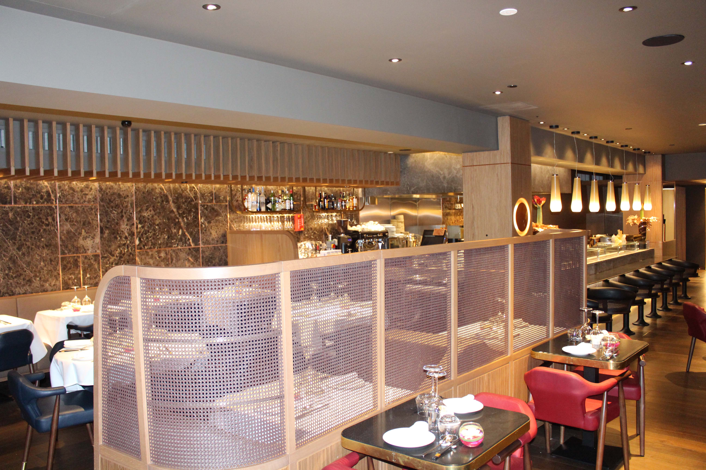
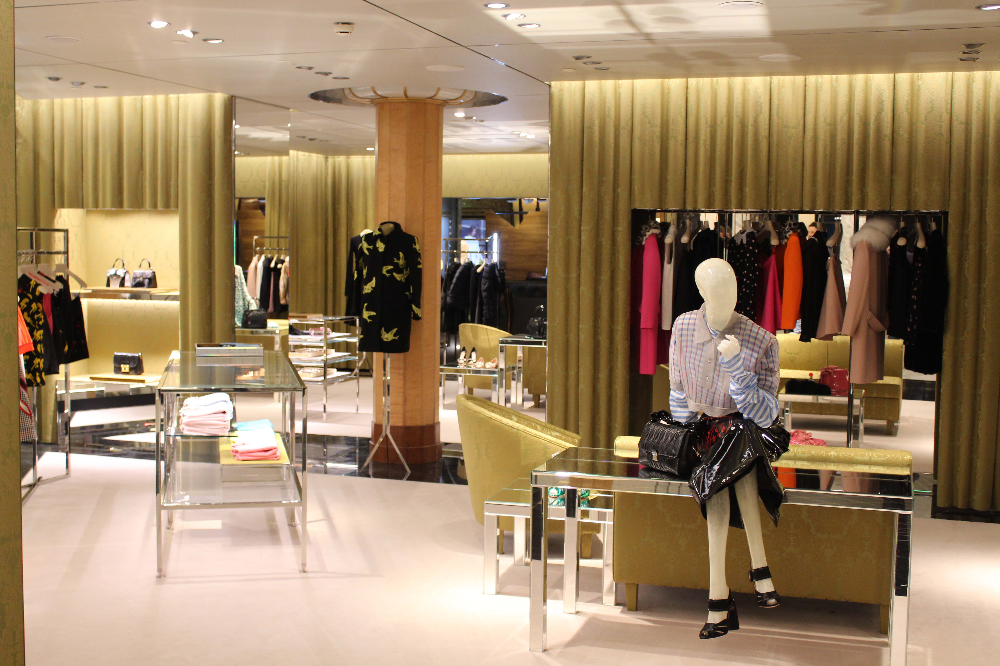
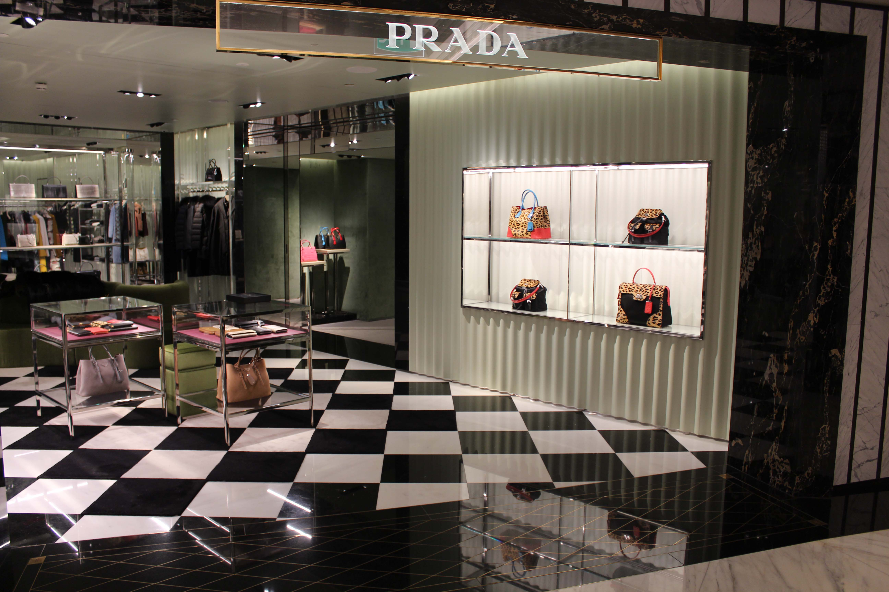

Reflex specialise in quality interior fitting-out construction activities offering a personalised and responsive service to meet the complex demands of customers who have Retail, Leisure and Commercial developments. Reflex is an organisation designed to provide a whole range of expertise at the highest level tailored to respond to the needs of the customer.
Constructing new build and refurbishment fitting-out works, developing detail from your design or our concepts.
Reflex has extensive experience in the resolution of design and construction bringing unique and immediate benefits to your project. Reflex has the support of carefully selected design consultants, specialist services and trade contractors and suppliers whose approach, skills and knowledge ensure a successful outcome to each project undertaken.
We have a very high end client list including but not limited to Prada, Armani, Versace, Furla, Brioni, Chloé, Céline, Alaïa, La Perla and Harrods. Reflex specialises in department store and shopping centre installations, being an approved contractor in Harrods and working in other stores such as Selfridges, Harvey Nichols and House of Fraser. We frequently work in Bicester Village and have good working knowledge of Westfield and Bluewater.


